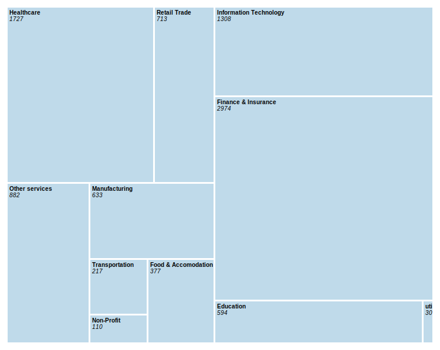

By Vivek Patil| April 9, 2023 | Get the data
The Worker Adjustment and Retraining Notification (WARN) Act requires employers with 100 or more employees to provide advance notice of mass layoffs or plant closings. In 2023, a total of 63 companies in New York State issued WARN notices, impacting thousands of workers across the state..
I scoured through the entire collection of U.S. Supreme Court argument transcripts for every session held in 2022, compiling a comprehensive database of the most frequently cited sections. By analyzing the context in which each section was cited, I sought to gain a deeper understanding of the underlying legal principles and arguments that shaped the court's decision-making process.
In what case and context was the section 2 quoted?
This database allows you to search for specific cases where the most quoted sections from the 2022 U.S. Supreme Court argument sessions were referenced. You can utilize the search function by using 'Control + F' or searching by docket number or speaker to locate the relevant arguments made by the Justices or lawyers in each individual case

Section 2 of the Voting Rights Act was referenced in the context of the case of Merrill v. Milligan, which has docket number 21-1086. Speaker Mr. Lacour argues in this case, "They argue that Section 2 of the Voting Rights Act requires Alabama to replace its map with a racially gerrymandered plan maximizing the number of majority-minority districts. But Section 2 requires an electoral process equally open to all, not one that guarantees maximum political success for some over others."
The transcripts indicate that the argument made was in response to the claim that Alabama should adopt a racially gerrymandered plan with the aim of maximizing the number of majority-minority districts. However, the argument presented in the transcripts states that Section 2 of the Voting Rights Act requires an electoral process that is equally open to all, rather than one that guarantees political success for certain groups over others. This example illustrates how Section 2 was invoked and debated in a significant case during the 2022 U.S. Supreme Court sessions.What is the Section 2 of Voting Rights Act?
According to the United States Department of Justice, Section 2 of the Voting Rights Act of 1965 prohibits voting practices or procedures that discriminate on the basis of race, color, or membership in one of the language minority groups identified in Section 4(f)(2) of the Act.
Similarly, the second most frequently quoted section, Section 1983, can be easily accessed and searched for in our database to identify the context in which it was used during the 2022 U.S. Supreme Court sessions. For instance, in the case of docket number 21-442, which is the case of Reed v. Goertz, Section 1983 was quoted extensively. By utilizing our database, you can access the arguments made in this case and examine how Section 1983 was interpreted and applied.

In this case, Justice Roberts argues, “..while a Section 1983 prisoner need not exhaust, just as a litigant need not seek rehearing, the clock doesn't start ticking until the state court procedures have come to an end. Second, as a practical matter, tying accrual to the end of state court litigation is simple, predictable, and sensible. Tying accrual to some earlier stage is not. Linking accrual to the trial court's judgment would disrespect the state court's appellate process and require a stay in almost every case. It would clutter dockets with protective complaints, motions, and amended complaints. And it raises more questions than it answers.”
Here, Section 1983 is used in the context of the Civil action for deprivation of rights, as in the case Reed vs. Goertz, Rodney Reed was sentenced to death in Texas for the 1996 rape and murder of Stacey Stites. Section 1983 lawsuits provide a way for people in state prisons or local jails to get relief from unconstitutional treatment or conditions.
Similarly, by utilizing this comprehensive database, you can identify the most frequently quoted sections from the 2022 U.S. Supreme Court argument sessions and find out the specific cases in which they were referenced. You can pinpoint the exact context in which these sections were cited.